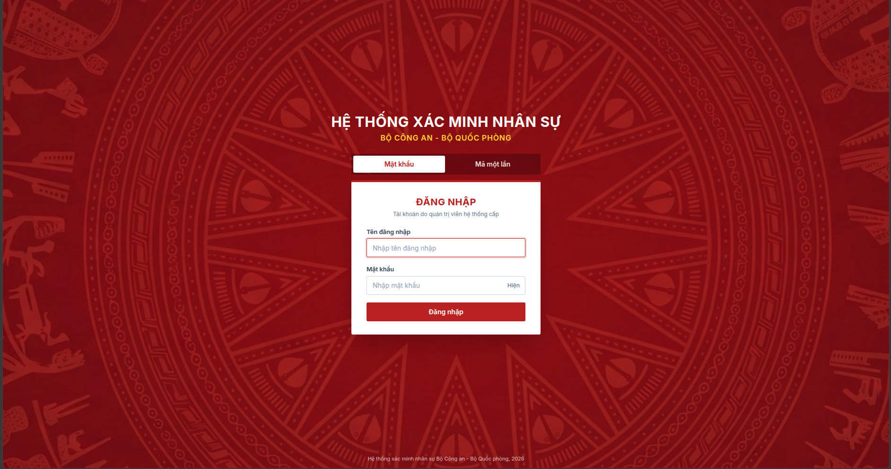
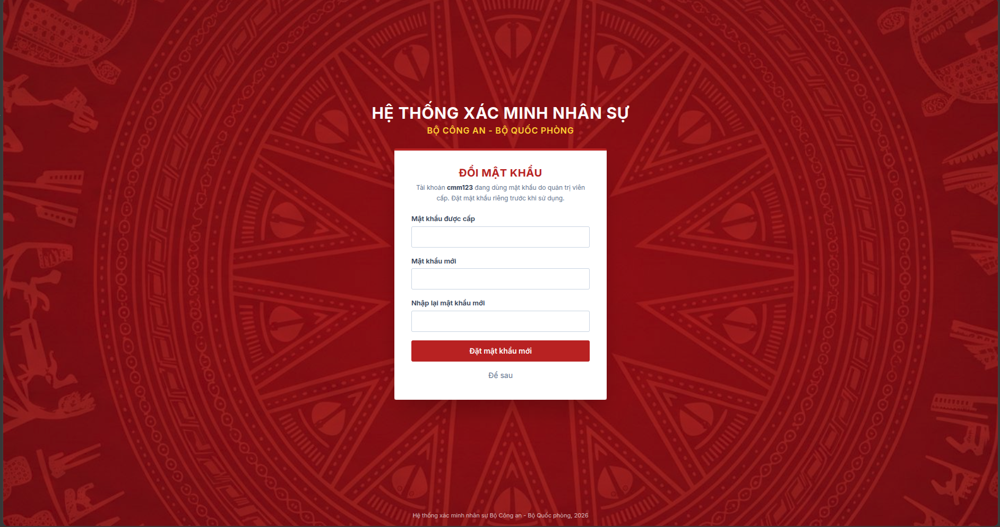
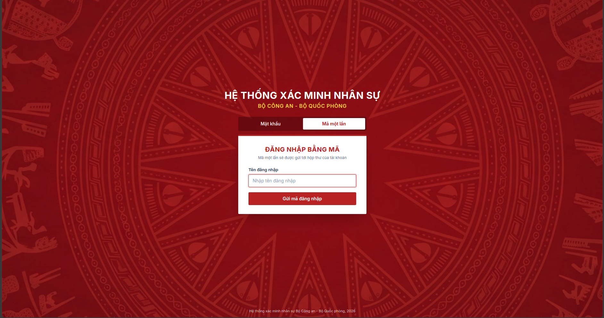
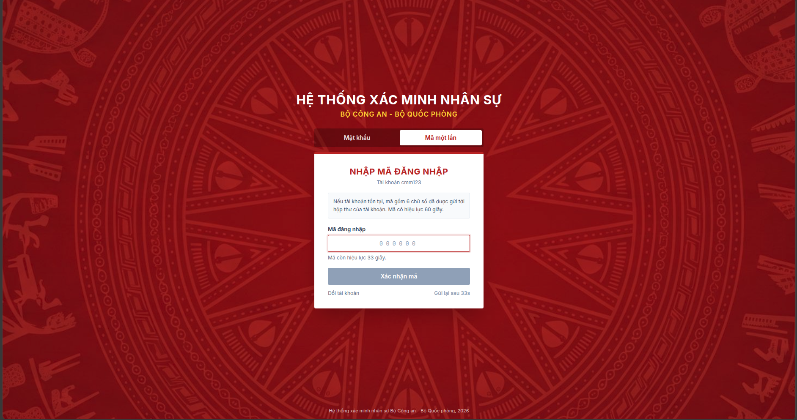
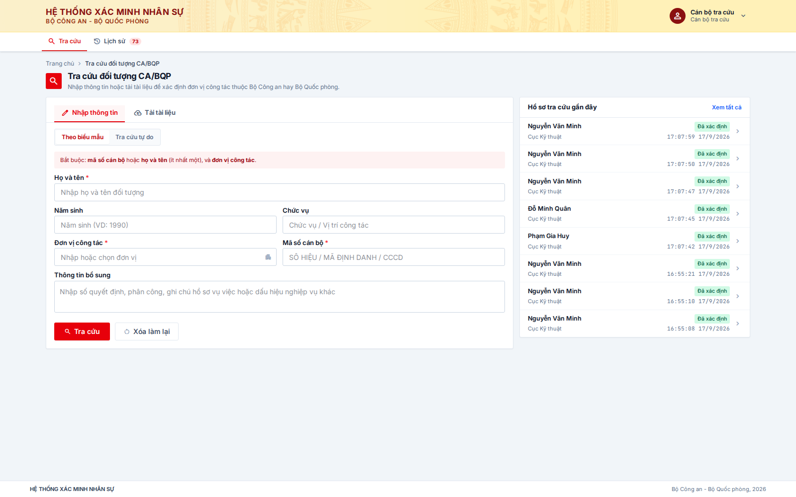
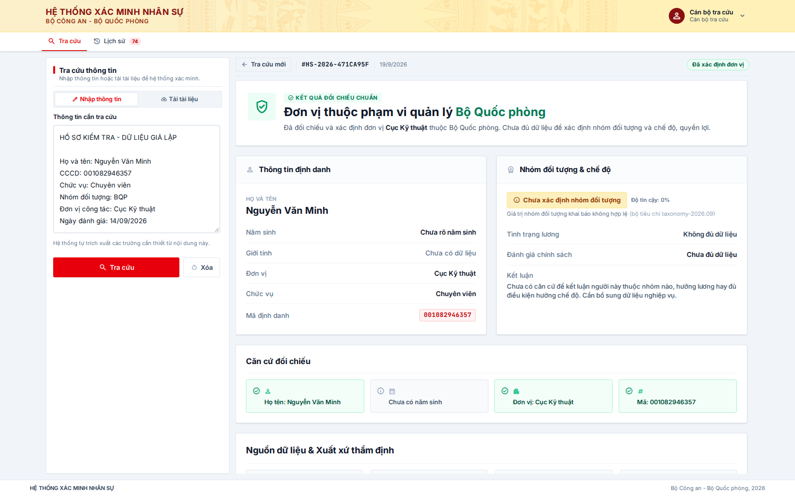
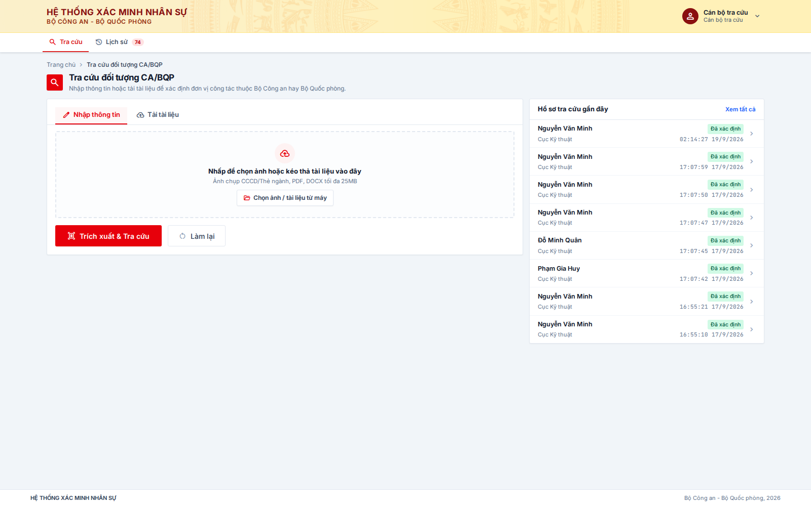
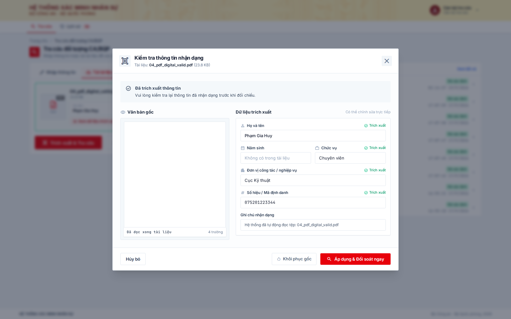
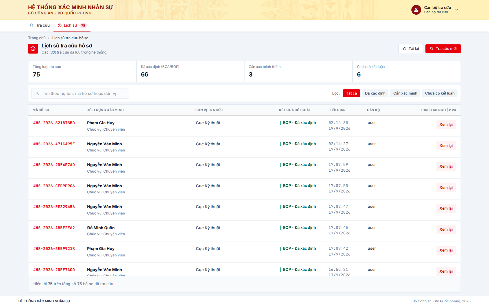

Tài khoản
Đăng nhập bằng tài khoản được cấp
Tài khoản do quản trị viên hệ thống cấp. Hãy đổi mật khẩu khi hệ thống yêu cầu và không chia sẻ tài khoản.
Tài liệu dành cho người dùng
Hướng dẫn tra cứu hồ sơ, kiểm tra kết quả và theo dõi các lượt tra cứu đã thực hiện trên hệ thống.
Trước khi bắt đầu
Hệ thống dùng để xác định thông tin đơn vị công tác có thuộc phạm vi Bộ Công an hoặc Bộ Quốc phòng hay không. Kết quả cần được đọc cùng trạng thái và bằng chứng hiển thị trên màn hình.
Tài khoản do quản trị viên hệ thống cấp. Hãy đổi mật khẩu khi hệ thống yêu cầu và không chia sẻ tài khoản.
Khi nhập biểu mẫu, cần có họ tên hoặc mã số cán bộ và đơn vị công tác. Có thể bổ sung chức vụ, năm sinh hoặc ghi chú.
Nếu màn hình báo cần kiểm tra hoặc chưa đủ dữ liệu, hãy hoàn thiện hồ sơ hoặc chuyển theo quy trình nghiệp vụ của đơn vị.
Bước 1
Mở hệ thống, sau đó nhập tên đăng nhập và mật khẩu.
Dùng đúng tài khoản cá nhân do quản trị viên cấp.
Chọn Hiện chỉ khi cần kiểm tra.
Sau khi vào hệ thống, màn hình Tra cứu sẽ mở mặc định.


Bước 2
Sau lần đăng nhập đầu tiên hoặc khi quản trị viên cấp lại mật khẩu, hệ thống hiển thị màn hình đổi mật khẩu riêng.
Nhập mật khẩu được cấp ở ô đầu tiên.
Nhập mật khẩu mới và nhập lại chính xác ở ô xác nhận.
Chọn Đặt mật khẩu mới để hoàn tất.
Tùy chọn đăng nhập
Đây là lựa chọn đăng nhập thay thế cho mật khẩu. Mã đăng nhập được gửi vào hộp thư của tài khoản.
Trên màn hình đăng nhập, chọn thẻ Mã một lần.
Nhập đúng tên đăng nhập của tài khoản.
Chọn Gửi mã đăng nhập và kiểm tra hộp thư.


Đăng nhập bằng mã một lần
Sau khi yêu cầu mã, mở hộp thư của tài khoản và nhập mã gồm 6 chữ số trong thời gian còn hiệu lực.
Kiểm tra hộp thư để nhận mã đăng nhập 6 chữ số.
Nhập đủ mã vào ô Mã đăng nhập.
Chọn Xác nhận mã để vào hệ thống.

Bước 3
Tại thẻ Nhập thông tin, chọn cách cung cấp dữ liệu phù hợp.
Chọn Theo biểu mẫu để nhập từng trường.
Điền họ tên hoặc mã số cán bộ, kèm đơn vị công tác.
Bổ sung năm sinh, chức vụ hoặc ghi chú nếu có.
Chọn Tra cứu để gửi hồ sơ.
Bước 4
Sau khi xử lý, hãy đọc trạng thái ở phần đầu kết quả trước, sau đó đối chiếu thông tin định danh và đơn vị được hệ thống nhận diện.
Hồ sơ có kết quả phù hợp với dữ liệu quản lý; vẫn cần kiểm tra các thông tin hiển thị.
Có thể có nhiều kết quả phù hợp hoặc chất lượng dữ liệu chưa đủ. Không chọn kết luận thay hệ thống.
Không có đủ căn cứ để xác định phạm vi quản lý. Bổ sung hoặc hiệu đính dữ liệu trước khi tra cứu lại.


Bước 5
Nếu đã có hồ sơ, chuyển sang thẻ Tải tài liệu để giảm thao tác nhập tay.
Chọn Tải tài liệu.
Kéo thả tệp hoặc chọn tệp từ máy tính.
Chờ hệ thống đọc và trích xuất thông tin.
Kiểm tra thông tin nhận dạng trước khi xác minh.
Bước 6
Màn hình kiểm tra cho phép bạn xem thông tin được trích xuất từ tài liệu. Hãy đối chiếu với hồ sơ gốc trước khi tiếp tục.
Đây là các thông tin ảnh hưởng trực tiếp đến kết quả xác minh.
Sửa lỗi nhận dạng hoặc bổ sung dữ liệu thiếu theo hồ sơ gốc.
Chỉ gửi tra cứu khi các thông tin nhận dạng đã được kiểm tra.


Bước 7
Chọn Lịch sử trên thanh điều hướng để tìm các hồ sơ đã tra cứu. Bạn có thể mở lại một lượt để xem kết quả chi tiết.
Kiểm tra lại kết quả, lưu ý các hồ sơ cần bổ sung hoặc theo quy trình thẩm định, sau đó đăng xuất bằng menu tài khoản ở góc trên bên phải.